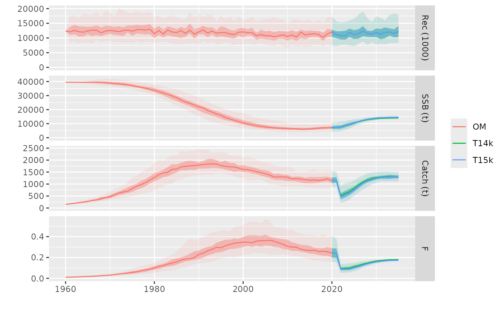

setcontrol Modify on the fly the arguments on any mpCtrl module
Source:R/mpCtrl-class.R
setcontrol.RdDEFINITION
Examples
# Example dataset
data(sol274)
#> Warning: namespace ‘dplyr’ is not available and has been replaced
#> by .GlobalEnv when processing object ‘om’
#> Warning: namespace ‘TMB’ is not available and has been replaced
#> by .GlobalEnv when processing object ‘om’
#> Warning: namespace ‘remotes’ is not available and has been replaced
#> by .GlobalEnv when processing object ‘om’
#> Warning: namespace ‘shiny’ is not available and has been replaced
#> by .GlobalEnv when processing object ‘om’
#> Warning: namespace ‘htmlwidgets’ is not available and has been replaced
#> by .GlobalEnv when processing object ‘om’
#> Warning: namespace ‘xtable’ is not available and has been replaced
#> by .GlobalEnv when processing object ‘om’
#> Warning: namespace ‘FLAssess’ is not available and has been replaced
#> by .GlobalEnv when processing object ‘om’
#> Warning: namespace ‘FLSRTMB’ is not available and has been replaced
#> by .GlobalEnv when processing object ‘om’
# Sets up an mpCtrl using hockeystick(fbar~ssb)
ctrl <- mpCtrl(est = mseCtrl(method=perfect.sa),
hcr = mseCtrl(method=hockeystick.hcr, args=list(metric="ssb", trigger=45000,
output="fbar", target=0.27)))
# Runs mp between 2021 and 2035
run <- mp(om, control=ctrl, args=list(iy=2021, fy=2035))
#> 2021 - 2022 - 2023 - 2024 - 2025 - 2026 - 2027 - 2028 - 2029 - 2030 - 2031 - 2032 - 2033 - 2034 -
# Alters the value for the 'trigger' HCR argument
run02 <- mp(om, control=setcontrol(ctrl, hcr=list(trigger=25000)),
args=list(iy=2021, fy=2035))
#> 2021 - 2022 - 2023 - 2024 - 2025 - 2026 - 2027 - 2028 - 2029 - 2030 - 2031 - 2032 - 2033 - 2034 -
# Plots results
plot(om, list(T45k=run, T25k=run02))
#> Warning: Removed 4500 rows containing non-finite outside the scale range
#> (`stat_fl_quantiles()`).
#> Warning: Removed 4500 rows containing non-finite outside the scale range
#> (`stat_fl_quantiles()`).
#> Warning: Removed 4500 rows containing non-finite outside the scale range
#> (`stat_fl_quantiles()`).
